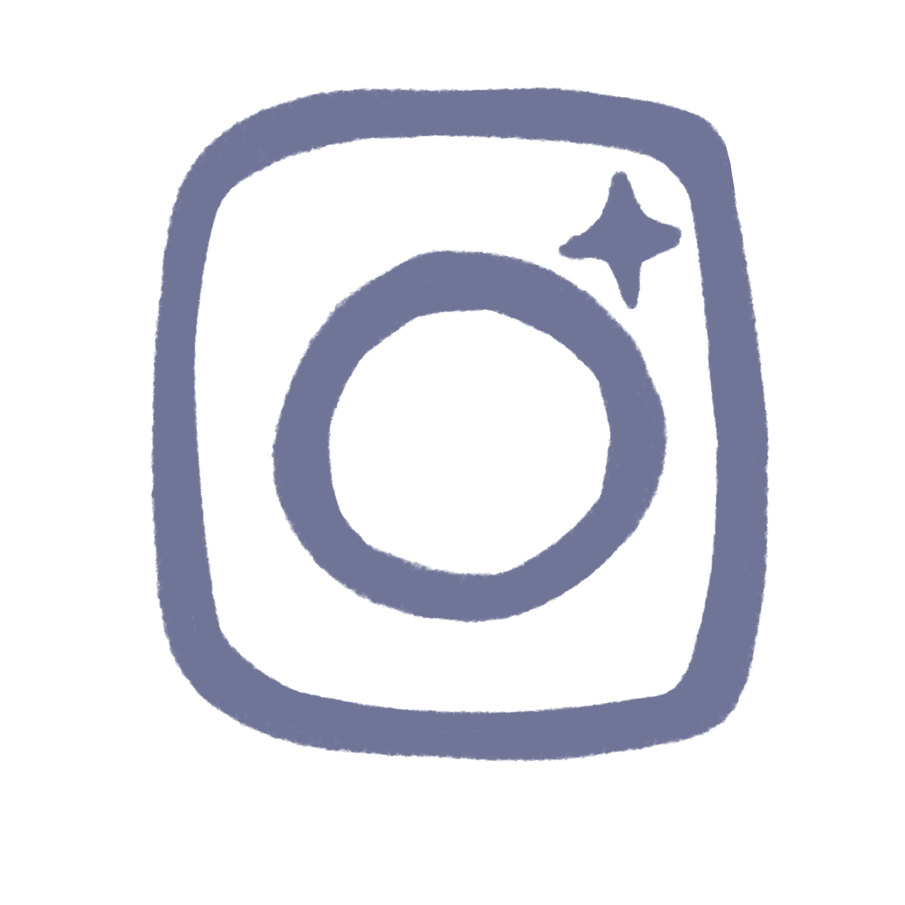

I designed, built, and programmed a custom, network-controlled robotic vehicle platform with an ESP32 microcontroller after modifying hardware for a failed proprietary system. I developed a local web server and a full-duplex communication interface using WebSockets with ESPAsyncWebServer and AsyncTCP. This setup allowed for low-latency manual driving through a custom HTML, CSS, and JavaScript web dashboard that can handle multiple key inputs. On the hardware side, I integrated and synchronized several subsystems using I2C and GPIO protocols. This included dual H-bridge DC motor drivers, a precision steering servo, a SSD1306 OLED UI display, and NeoPixel LED indicators for real-time system status feedback. To protect and unify the platform, I designed and built a custom mechanical enclosure using CAD software. I successfully managed tight space constraints to fit internal component mounts, thermal ventilation channels, and precise cutouts for the telemetry screen and status LEDs.


My name is Steven Xu, and I am a high school student with a deep passion for hardware engineering, software development, and robotics. Over the years, my fascination with microcontrollers has driven me to design and build numerous custom devices, bridging the gap between hardware and software. This love for hands-on creation led me to join FRC Robotics Team Pearadox 5414, where I honed essential industry skills including CAD, iterative design, thorough documentation, and practical engineering principles. also enjoy making games, as it allows me to use my mind to create and communicate with others to be able to release fun and engaging games.
My technical portfolio spans both physical and digital realms. On the hardware side, I have engineered a 32x64 LED matrix display that fetches and renders real-time API data, designed and CAD-modeled custom enclosures for RC vehicles, and built a webcam that tracks your face with 2 DOF through AI. Learning about joints and tracking, I then built a 5-DOF robotic arm—a project that required extensive prototyping and optimization to build and operate at a high level. These projects were all created using a 3d printer, which is something that I have spent countless hours fixing and upgrading so that I can get the fastest and best prints. Complementing my hardware experience is a strong software foundation in Python, Java, C++, and GDScript, which I also leverage to build engaging games that connect people in game jams and hackathons. Along with these games, I use coding to optimize measuring volunteering hours in my volunteer organization using web dev and cloud automation.
Outside of my technical pursuits, I am dedicated to community service and leadership. In my role as President of the We Care Act Pearland branch, I coordinate student-driven musical showcases for residents at local senior centers. Drawing on over a decade of guitar experience and five years in the school band, I leverage my musical background to drive charitable initiatives, raise vital support for Alzheimer’s research, and foster meaningful connections through performance. Along with music, I enjoy going into the outdoors and fishing with friends and family, allowing me to better connect with people and make new memories.